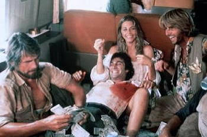

HIGH RISK (1981) — CERTIFIED MGC F-15

⚖️ MGC Lower Court Docket
- Asset Title: High Risk (1981) – The Colombian Jungle Extortion Ledger
- Official Registry Grade: Certified MGC F-15 (Choice Fine / Passing Entertainment Luster)
- Presiding: Judge Mina, Chief of Resources (Blue Sapphire Court)
- Case File: #033
📜 THE FORENSIC NARRATIVE BREAKDOWN & RECOVERY
The Chief of Resources adjusts the diagnostic array, clears out the background server logs, and drops the 5x magnifying lens onto this deep-cut, late-grindhouse heist planchet.
🚨 Key Planchet Flaws:
1. Passing Entertainment Luster & High-Impact Stunt Metallurgy
-
The Luster:
Under strict magnification, the foundational strike of High Risk holds an incredibly fun, highly watchable 1980s broadcast luster. The premise—four ordinary American suburban guys who decide to fly to Colombia to rob a multi-million-dollar drug lord’s safe—delivers instant, high-octane narrative velocity. The production boasts genuine practical stunt work, including dynamic jungle chase sequences, explosion physics, and a thrilling biplane escape that keeps the film’s layout highly engaging for retro action speculators.
2. Localized Character Fatigue & Uncalibrated Ensemble Dialogue
-
The Wear:
However, sliding the lens across the character profiles exposes immediate alloy flatness and surface wear. While the film features a powerhouse B-movie casting lineup (including James Brolin, Cleavon Little, Bruce Davison, and Chick Vennera), the script provides incredibly thin character depth. The dialogue frequently drops into repetitive, heavily circulated bickering sequences inside the jungle canopy that stall the narrative engine. The performers are forced to rely entirely on their natural charisma to fight against a flat script surface, creating noticeable friction patterns across the plot canvas.
3. The Sudden Third-Act Tonal Shift & Formulaic Resolution (The F-15 Cap)
-
The Defect:
The screenplay structure suffers from serious narrative fragmentation during the final act transition. -
The Forensic Data:
The narrative trajectory attempts to balance light-hearted buddy comedy against brutal, gritty drug-cartel violence. When Anthony Quinn enters the layout as the local bandit chief, Mariano, the film’s structural integrity experiences a noticeable logic leak. The pacing engine slows down to accommodate broad, country-fried comedic tropes right when the psychological tension should be hitting maximum acceleration. This unpolished genre balancing act, combined with a highly predictable, happy-ending resolution, leaves a permanent fingerprint on the canvas—locking the coin securely at the firm F-15 line.
🔍 THE CHIEF OF RESOURCES’ CERTIFIED VERDICT
- High Risk is the absolute textbook definition of an F-grade asset. It is fantastic passing entertainment that handles its runtime beautifully without dragging the audience into a numb sleep, but its uncalibrated tonal shifts and flat script metrics permanently bar it from the higher XF registers. It avoids slipping down to Tina’s lower-grade G-junk boxes due to its pure, nostalgic 1980s stunt luster.
- MGC F-15 Choice Fine Registry Allocation 🔨💥
 LOGGED: Case Closed.
LOGGED: Case Closed.

• © 2026 MOVIE GRADING CONSENSUS. All Sovereign Rights Reserved.